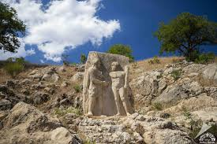

Adıyaman Kültürel Yerler
Tarihin Derinliklerinden Gelen Medeniyet
Müzeler
Adıyaman Müzesi
Bölgenin zengin tarihini yansıtan, önemli arkeolojik eserlerin sergilendiği müze.

Kommagene Müzesi
Nemrut Dağı'ndan çıkarılan eserlerin sergilendiği özel müze.
Tarihi Yapılar

Nemrut Dağı
UNESCO Dünya Mirası Listesi'nde yer alan, devasa heykelleriyle ünlü antik kral mezarı.

Cendere Köprüsü
Roma döneminden kalma, dünyanın en eski köprülerinden biri.

Arsemia
Kommagene Krallığı'nın yazlık başkenti, antik kent kalıntıları.
Tarihi Camiler
Ulu Cami
Dulkadiroğulları döneminden kalma, şehrin en eski camisi.
Kap Camii
Selçuklu döneminden kalma, tarihi cami.